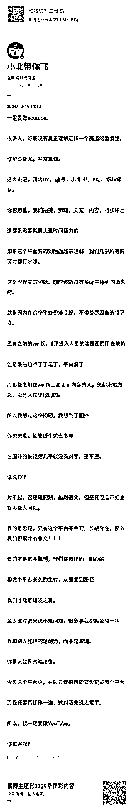
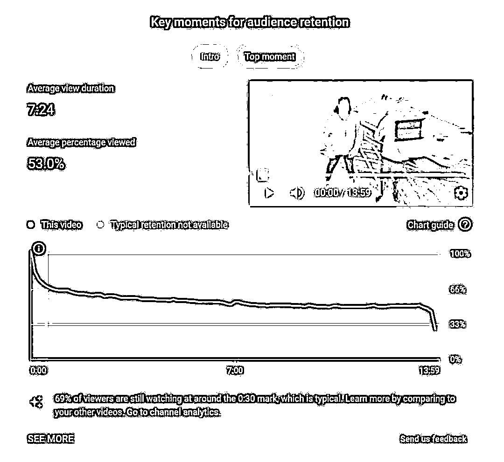
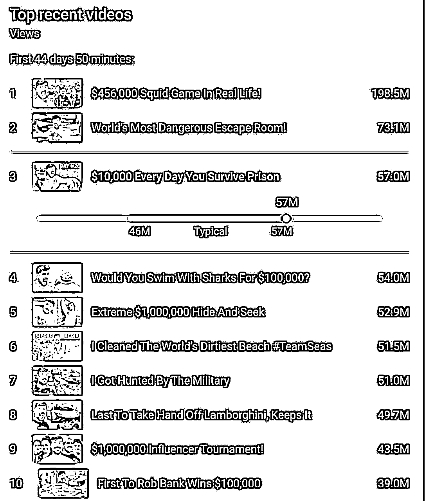
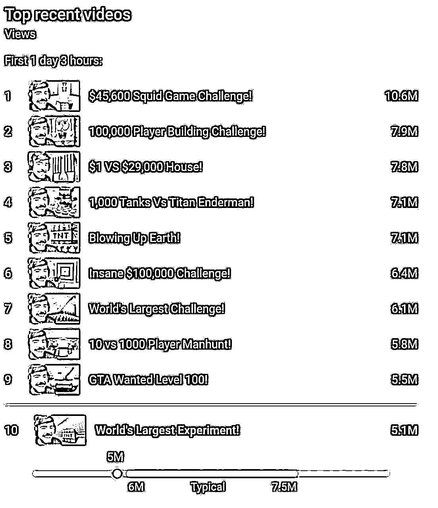
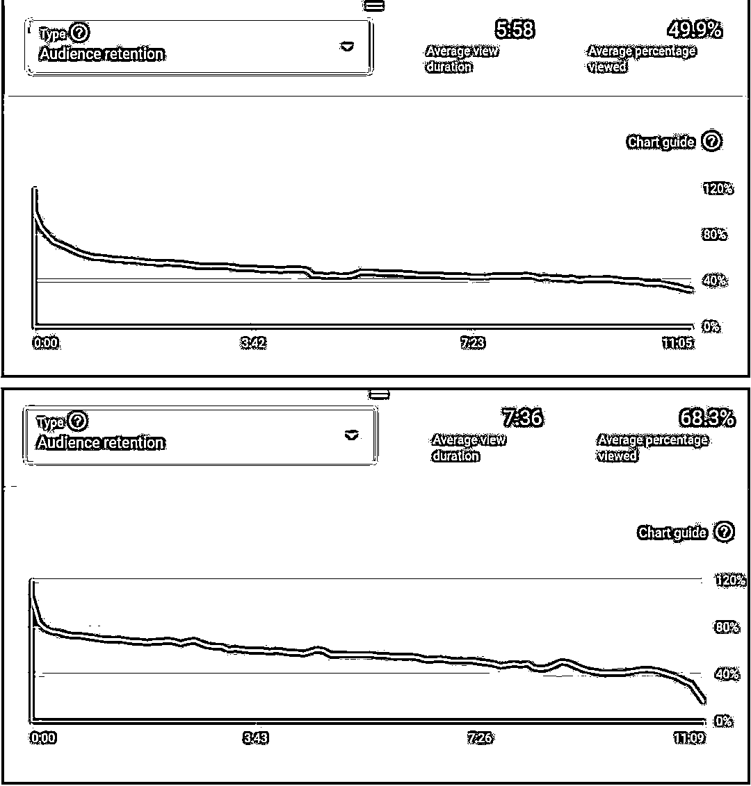
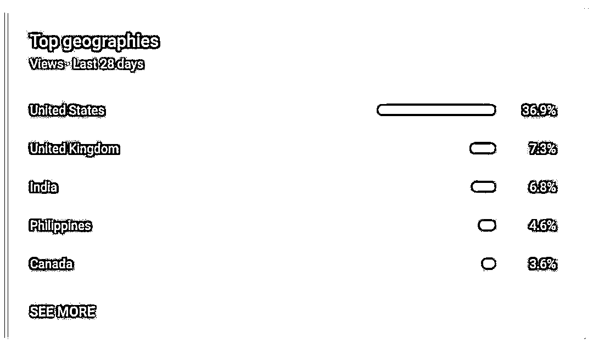
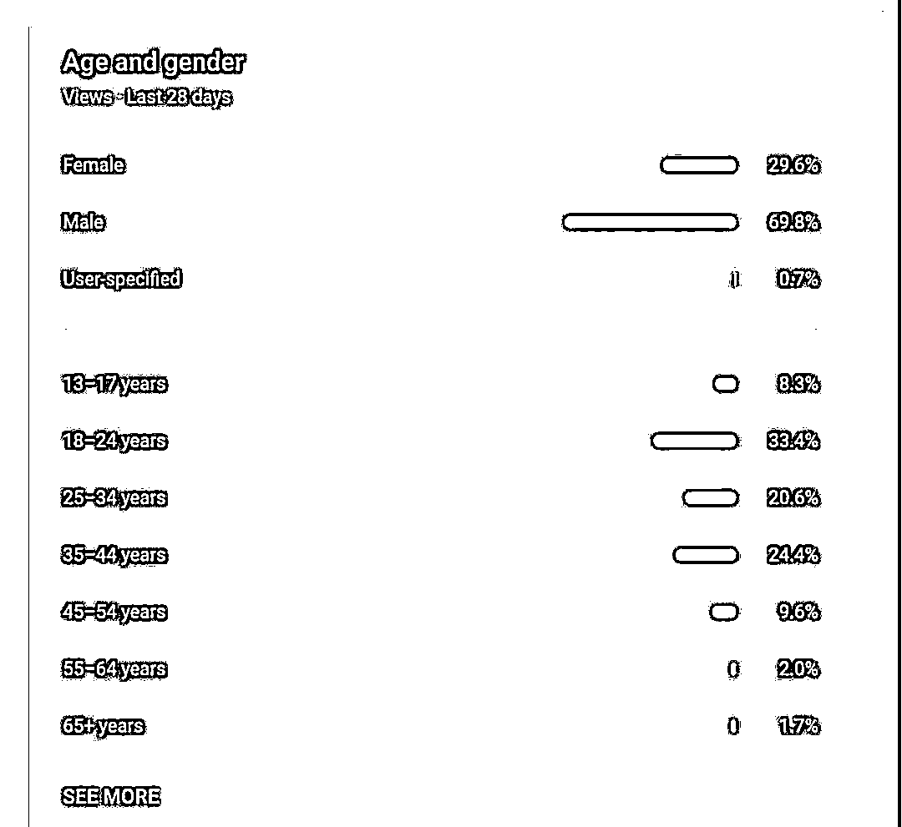

来源：https://kj259khusm.feishu.cn/docx/HcMbdJ8aUoXEJ8xkHV0cbOKrnQN
看见亦仁老板发了 YouTube 的超级标，
我这几天也在写 YouTube 的帖子，这不撞上了吗？
文章内容如下⬇️
YouTube 的一些数据
YouTube 第一博主野兽先生做 YouTube 的方法论
华人区第一博主老高与小茉做 YouTube 的方法论
最后一些行动上的建议
希望对大家能有所收获
1. 用户基础
- 月活跃用户超过25亿
- 每天有数十亿小时的观看时长
- 全球约有20亿登录用户每月至少访问一次
2. 内容规模
- 每分钟上传约500小时的视频内容
- 每天观看次数超过10亿次
- 包含数十亿个视频
3. 创作者生态
- 超过200万创作者参与YouTube合作伙伴计划
- 数千个频道拥有超过100万订阅者
- 每年支付数十亿美元给创作者
4. 商业价值
- 年广告收入超过200亿美元
- YouTube Premium和YouTube Music等付费服务用户持续增长
- 在全球数字广告市场占据重要份额
5. 增长趋势
- 移动端观看占比持续上升，超过70%
- 直播和短视频(Shorts)业务快速发展
- 电视端观看时长显著增长
全世界海外华人一共六千万人，但是油管公布的数据，用中文打字的有八千五百万，多出来的就是爬🪜的。
上面的视频大部分都是三十分钟以上，看 YouTube 的人比 ins ，facebook 要多得多。
一般人只要把 YouTube 做到两三万粉丝，一个月就有不错的收入了，当然关键还是看播放量。
YouTube 的流量收入是所有平台的当中最高的，甚至是 B 站的几十倍。
2012 年 7 年里有一个视频博主叫做 Pudi pie，这个视频博主特好玩，他的视频长度高达 1, 300 多亿分钟，而他的创作者叫做卡尔伯格，一年赚了 3, 880 万美金，其中 95% 是来自于 YouTube 的视频钱和视频中的广告。
全世界只有油管这个，吃这个做的最好的就是广告商每支付一美金，油管会把 55 美分给发布者，只留 45 美分留做运营，所以它是对内容创作者非常好的一个平台。
2021 年，油管公布了有史以来最大季度的广告收入，是 70 亿美金。但是他宣布在三年里面，他们向博主支付的美金高达 300 亿美金，所以他真的是内容创作者的一个平台。
福布斯杂志制作了一个最富有的油管人的排行榜，里面有一个梳理案例特别有意思，就是这个人叫瑞安， 9 岁一个小男孩。
从 2018 年开始，这个 9 岁的瑞安小男孩一边学习一边成立一家工作室，他的爸妈利用这个瑞安的成名知名度，他的成功去挣钱，他们在沃尔玛塔吉特超市卖瑞安品牌的玩具、服装、床上用品，当然它主要还是拍一些跟孩子有关的一些内容啊。我们看一个数据， 2020 年瑞安的预期接近 3, 000 万美金，试了一个 9 岁孩子挣了 3, 000 万美金。
可以看出，YouTube 的潜力很大。
前几天看见顾小北老师也发了一则关于 YouTube 的分享，很有道理

推荐文章：谁也成为不了中国的 YouTube
MrBeast 是美国第一网红，也是全球第一网红，他是 Youtube 订阅者最多的作者，截止2024年9月，他拥有3.17亿粉丝。这份36页的 PDF 《如何在MrBeast制作团队中成功》文件，为 MrBeast 的员工培训手册， 由Jimmy（MrBeast）本人亲自撰写。
咱们如果学习 YouTube，肯定是向做的最好的人学习，接下来讲的就是野兽先生对于怎么做好 YouTube 的方法论。
无论你在哪个部门工作，这都很重要。点击率基本上是看到我们缩略图的人数与点击它的人数的比率。如果有1亿人看到我们的缩略图，1千万人点击了它，那么点击率就是10%。这决定了我们对视频所做的所有事情。《我在自家前院待了50小时》”听起来很无聊，你不会点击它。但如果你看到《我在番茄酱中待了50小时》，你可能会点击。两个视频在时间和努力上都差不多，但番茄酱的视频更具病毒传播性。一个人坐在浴缸里泡着番茄酱的画面比一个人在自家前院坐着有趣得多。
标题对于提升 CTR 也同样重要。一个简单的方法是把标题从“我待了50小时”改为“我生存了50小时”，这样会增添更多的悬念，显得更极端。一般来说，越极端的标题效果越好。“我不喜欢香蕉”远不如“香蕉是地球上最糟糕的食物”来得有吸引力。
现在，如果你在制作或者创意部门，你可能会想，标题和缩略图对我有什么关系呢？答案是预期。视频的标题和缩略图设定了观众对你制作的视频的期望。想象一下，你点开一个标题是“世界上最大的充气城堡”的视频，缩略图上是一个巨大的黄色充气城堡，旁边是一群高楼大厦。但当视频播放时，城堡并不是黄色的，而且也不是世界上最大的，而且是在一个空旷的田野里，而不是城市。这会让你觉得自己被骗了，从而退出视频，因为视频没有满足标题和缩略图设定的期望。这就是为什么你必须知道你正在制作的视频的标题和缩略图是什么！如果你甚至不知道观众对你制作的视频的期望是什么，你怎么能知道该如何开始呢
这代表了观众在某个视频上平均观看的时间。YouTube 非常棒，它为我们提供了每个视频的详细图表，显示了每一秒观众的流失情况。

看上面的蓝色曲线？它代表了点击这个视频的6000万人的注意力。很疯狂吧？我们可以看到每个人在哪个时刻退出了这个视频。就像几乎所有的 YouTube 视频一样，第一分钟的流失量最大（你可以去看看其他视频）。这就是为什么我们如此关注视频的第一分钟，并且尽可能地让它做到最好。在这个特定视频中，我们在视频的第一分钟流失了2100万观众（相比其他频道来说，这个表现其实还算不错），情况本来可能更糟。
如果视频的开头没有很好地照明，我没有兑现标题的承诺，没有提前计划好说什么，或者我们没有为第一分钟的内容准备一些有趣的东西，我们可能会流失更多观众。因为如果我们没有做到这些，那么这个视频连2100万次观看都达不到。而且，如果观看量保持不变，那么第一分钟之后还剩下的观众人数会从3900万降到2000万。
视频的第一分钟是每个视频中最重要的一分钟。
第一分钟之后，就是我们所说的1到3分钟。一般来说，这一阶段你需要从炒作过渡到执行。停止告诉观众他们即将看到什么，开始展示给他们看。一个1到3分钟战术的例子是疯狂进展。假设我们有一个10分钟的视频，讲的是一个人在树林里生存几周的故事。我们不会像传统电影制作人那样，用视频的前三分钟描述他在第一天的经历。相反，我们会在前三分钟内覆盖他在树林中的几天，这样观众现在对故事非常投入。他们已经看到了这个人如何在树林里生存了几天，并且情感上想知道他还能撑多久。我们还会在大约第3分钟左右做一些叫做再吸引观众的内容。再吸引可以理解为非常有趣且与故事契合的内容，令人印象深刻。换句话说，这是一个“只有 MrBeast 能做到的”段落。在这个时间点再次吸引观众非常重要，因为他们可能会对故事感到厌倦并退出。再吸引通常是壮观的场景，有时需要大量时间和金钱才能做到完美。例如在视频“每一天都给你1万美元，直到你离开监狱”中，Karl 负责监督 Josh，就是一个再吸引的好例子。
在1到3分钟之后，显然就是第3到6分钟的时间段，这是视频中下一个重要的部分。你需要在这个时间段计划出所有最刺激和有趣的内容，这些内容同时也要非常简单。包括大量快速的场景切换和能引发强烈视觉刺激的简单内容。这段时间的目标是让观众爱上这个故事，爱上视频中的人，爱上整个视频。如果我们能让他们看完前半部分的视频，他们就很有可能会一直看到结尾。通常在第6分钟左右，我们会加入另一个再吸引，它需要一些解释，推动故事进入视频的后半部分。
最后，就是我们所说的后半段内容。在写这部分内容时，我必须小心，因为我不希望你以为我容忍任何质量欠佳的内容。很多视频因为后半段内容糟糕而被取消，哈哈。但一般来说，一旦你让观众看了6分钟，他们就已经被故事深深吸引，并且处于我称之为“松弛”的状态。他们在看视频时，甚至没有意识到自己在看视频。通常，质量不那么好的内容会出现在视频的后半段。不过，永远不要在视频即将结束时发出信号，除非是为了为视频最后的奖励或结局制造期待。在这个阶段，长时间的解释部分可以放在这里。如果发生了意外情况或者计划有变，这些也可以被转化为内容。
还有一个无法量化的关于病毒式传播的因素，我们称之为“哇”因素，它无疑是最主观的。你可以满足所有CTR和AVD的要求，但视频的表现可能仍然平平。一个“哇”因素的例子是我们的视频“100天在圆圈内生活”。我们承诺给某个人50万美元，条件是他可以在一个田地的圆圈里生活100天，而不是让他一开始就住进他的房子。我们在视频的前30秒通过吊车把房子带入圆圈。为什么？因为在YouTube上，谁还能做到这种事情呢，哈哈。这个操作并没有给标题和缩略图增加任何东西，但它确实吸引了观众，并且提高了留存率。
从数据角度来看，这种操作可能不太合理，甚至是浪费时间，但它对观众产生的印象是无价的。每当我们做出别人无法做到的事情时，这就将我们和其他创作者区分开来，让我们的内容显得更加特别。你无法量化“哇”因素，但我可以描述它：任何其他YouTuber做不到的事情。重要的是，我们永远不能失去这种“哇”因素。
无论是制作、创意、拍摄，还是剪辑，我都希望你对 YouTube 充满痴迷。放弃 Netflix 和 Hulu，多看 YouTube，毫无疑问，这将使你在这里更加成功。你对 YouTube 世界的投资越多，你对趋势的理解就会越深刻，你会知道我们如何才能脱颖而出，以及我们可以做得更好的地方。
除了从 YouTube 上学习，我还希望你去读《目标》这本书（如果你还没读过的话）。我过去让每个人都读这本书。我知道瓶颈很明显，有时候你会觉得我像在对10岁的小孩说话，但只是因为不知道和不了解瓶颈这一简单的事情，毁掉了很多视频。
你们所有人都应该深刻理解从视频进入拍摄日程到实际拍摄完成的整个工作流程。我承认我在远提前制定视频拍摄日程并坚持执行方面的记录并不出色。假设你在制作部工作，而你负责的视频被安排在45天后。这期间有很多事情需要发生，才能让你开始工作。大概最重要的两件事是你需要缩略图草稿，和你团队中的创意人员撰写视频脚本。不要只是去找他们说“我需要创意，完成后通知我”或者“我需要缩略图，完成后通知我”
我希望我们把制作看作是一个团队任务，而不是一个单独的任务。这就是为什么你要录像所有关键的内容（以及你认为人们可能会问到的任何内容）。假设你去为一个下个月的视频勘探场地，而你的团队其他成员正在处理本周的视频。大多数人只会去勘探场地，可能拍几张照片，走一圈并试图形成一个良好的心理模型。然后一周后，当你回到公司时，视频现在是 Tyler 的主要任务，他开始问你一些关于场地的问题，而你却记不清了。问题变得越来越详细，你只能依靠记忆来回答。制作团队的其他成员也需要开始计划场景，但他们不知道场地是什么样子的，整个过程一团糟。这就是为什么我们说要录像一切。哪个更重要？是让一个人对某个事情有清晰的了解，还是让整个10人团队都清晰了解？显然是团队。最简单的方法是记录视频，并存储在大家可以随时查阅的地方。很多问题都可以通过录像解决，尤其是当我们订购东西时，要求提供视频以避免问题。特别是我个人是一个视觉型的人，我总是要求看看东西长什么样子，所以对我来说，视频也非常有价值。录像一切。
关键组件是指对视频来说至关重要的东西。如果我想在一个岛上安排100个人，并将它送给其中一个人，那么确保一个岛屿就是一个关键组件。无论岛上的挑战设计得多么出色，天气条件如何，如果没有这个岛，视频就无法进行。
因此，岛屿是一个关键组件。另一个关键组件的例子是视频的标题和缩略图。还记得之前那个充气城堡的故事吗？缩略图上的黄色充气城堡，实际上是红色的？你正在制作的视频的缩略图也可以生成关键组件。再举一个例子：假设你团队的创意人员为我提出了10个挑战的视频，我说：“我喜欢这个视频，主要是因为挑战3和挑战7，如果没有它们，我会讨厌这个视频。”那么，挑战3和挑战7现在就成了这个视频的关键组件。
因此，关键组件可以来自任何地方，一旦你确定某个东西是关键组件，你就要像对待自己的孩子一样对待它。如果没有你正在做的那件事，我们就没有视频！
不惜一切代价保护它，每天检查10次，痴迷它，为它准备一个备用方案，如果它需要运输，雇人亲自去拿回来，不要依赖标准运输服务。如果事情出了问题，立刻汇报，马上！永远不要对关键组件掷硬币决定（这就相当于你在赌一个视频，也就是赌掉上百万美元）。在事情恶化之前，请尽早把我或 James 拉进来。
没有人能100%保证我们的拍摄能够按时按预算进行。这是不可能的。但你仍然可以做一些事情来增加成功的几率，而最简单却最常被忽视的就是安排备用拍摄日。当你花费数十万美元租用场地、租赁坦克等设备时，确保你有能力延长拍摄时间，以防万一出了问题。（这甚至可能不是你的视频问题，可能是游戏视频出了问题，而我需要把你的视频推迟一天来弥补）。我宁愿拥有一个可能只有90%酷炫的坦克，但坦克的主人非常配合，让我可以做任何我想做的事，并且我可以额外付费延长使用时间，而不是拥有一个100%完美的坦克，但坦克的主人对我们的操作处处约束，而且没有备用拍摄日。这只是个显而易见的例子，只是为了启发你。一定要在做这样的事情之前先和创意部门确认，但备用拍摄日是必要的，理想情况下，我们与那些看重我们并且喜欢我们的人合作，这样他们会更加灵活。
没有人能100%保证我们的拍摄能够按时按预算进行。这是不可能的。但你仍然可以做一些事情来增加成功的几率，而最简单却最常被忽视的就是安排备用拍摄日。当你花费数十万美元租用场地、租赁坦克等设备时，确保你有能力延长拍摄时间，以防万一出了问题。（这甚至可能不是你的视频问题，可能是游戏视频出了问题，而我需要把你的视频推迟一天来弥补）。我宁愿拥有一个可能只有90%酷炫的坦克，但坦克的主人非常配合，让我可以做任何我想做的事，并且我可以额外付费延长使用时间，而不是拥有一个100%完美的坦克，但坦克的主人对我们的操作处处约束，而且没有备用拍摄日。这只是个显而易见的例子，只是为了启发你。一定要在做这样的事情之前先和创意部门确认，但备用拍摄日是必要的，理想情况下，我们与那些看重我们并且喜欢我们的人合作，这样他们会更加灵活。
如果你和 James 一起工作过一段时间，你会听到他多次提到“更高形式的沟通”，因为它很重要，而且大多数人都忽略了这一点。当你需要为你的关键组件争取某些东西时，最糟糕的做法就是发邮件。最好的办法是面对面沟通。你需要知道什么时候应该打电话，什么时候应该面对面交流，什么时候可以发短信。沟通层次越低，误解的几率就越大。比如现在，我正在打字，你不知道我是笑着、微笑着、开心、愤怒，还是悲伤的。你无法解读我的肢体语言或面部表情，因此你并不一定能正确理解我所传达的意思。如果你只是需要卫生间里多放几卷手纸，发个短信就够了。但如果你拍摄一周前，发现某个关键组件出问题了？至少需要多方电话会议，最好能当面沟通。事情越复杂，所使用的沟通形式就越高。先打电话，如果没人接再发短信。既然我们在谈论沟通问题，我还想说，书面沟通并不代表完成了沟通，除非对方确认他们看过。
我讨厌借口，我用尽全身心的力量去鄙视那些为了保全面子而不从错误中吸取教训的人。犯错是可以接受的！真的，完全可以，我期待你会犯很多错误，这完全没有问题。这里的每位老员工都曾让我损失过100万美元，你可以亲自去问他们，我有没有因此一直记恨他们。我接受错误的原因是我知道这是学习的方式。我将其视为对你的大脑的投资。（这就是为什么我对 C 级选手零容忍，他们必须马上离开。那些错误本可以由 A 级选手犯下，并且 A 级选手能从中吸取教训。）我只请求你每次从错误中学习，尽量不要重复犯错，那时就会变得很烦人。我从来没有因为某个人的失误而当场解雇他们，你完全不用害怕。承认错误，这样我们可以讨论如何解决问题，然后继续前进。
当你被分配任务时，你应该有一个我们称之为“优先事项清单”的东西。如果 Ali 告诉你，你的优先事项是：买一辆20万美元以下的兰博基尼；把它包上动漫角色的贴纸；制作一个定制方向盘。
那么，世界上没有任何事情可以阻止你完成这些优先事项。如果其他团队来找你帮忙，你花了两天时间帮他们，而没有确保兰博基尼到位，那么这是你的责任。如果摄影棚着火了，你停下工作去灭火，结果兰博基尼没搞定，那也是你的责任。（哈哈，开个玩笑）但说真的，不要让任何事情影响你完成你的优先事项。
顾问就是作弊码。需要制作世界上最大的一块蛋糕吗？首先给制作之前最大蛋糕的人打电话，他已经做过无数测试，可以为你节省几周的工作。我非常相信顾问，因为我花了将近十年的时间痴迷于 YouTube，我可以向一个刚起步的新创作者展示如何在一个月内从100个订阅者增长到1万个。如果他们独自去做，可能需要几年时间才能做到。顾问是上帝的恩赐，请充分利用它们。在每一个分配给你的任务中，永远首先问自己是否可以找到一个顾问来帮助你。这非常重要，以至于我要你在心里重复三遍：“我将永远在接受任务时首先检查是否可以找到顾问来帮助我。”
你需要的所有解决方案都可以通过这五个途径解决：数学、科学、愿景、审批和预算。
当你与 MrBeast 制作团队之外的人打交道时，永远不要把“不行”当作最终答案。假设我们需要买下一个商店里的所有东西，你打电话给当地的 Dollar Tree，而接电话的人说：“不行，你不能在这里拍摄。”这句话根本毫无意义。继续跟其他员工谈谈，看看他们有没有人是粉丝，或者他们的孩子是不是粉丝，尝试跟他们的老板，甚至老板的老板沟通，或者让我通过推特私信他们的社交团队，等等。
如果用尽所有办法后你还是得到了“不行”的答案，这不意味着你不能尝试其他的 Dollar Tree，因为其他门店的经理可能是我们的大粉丝，并愿意通融。基本上，我想传达的是我们所说的“突破障碍”。不要仅仅因为一个人告诉你不行就停下来，你应该在所有可行的选项都耗尽之后才停手。这个工具加上其他技巧能大幅提高你在这里制作成功的几率。
请不要在工作日里只处理一个视频。这种做法会让你在未来的视频工作中落后，形成一种我想要避免的恶性循环。如果你放下所有事情，全力投入一个视频三天时间，那这三天里你其他视频的进度就会落后，最终你不得不放下其他视频来专注于这些视频，导致你无法专注于未来的任务。结果就是你只能专注于眼前的工作，因为你已经毁掉了任何提前工作的机会。如果你在某天只处理了一个视频，那么那天你作为 MrBeast 的员工就失败了。
显然，公司里每个人都有自己的角色。老实说，如果你能以90%的成功率持续领导并制作视频，那我不在乎你是否每天往水槽里撒尿，我依然会爱你。但话虽如此，如果有一天你能学习如何以我们的方式持摄像机，那就更好了。当我们进行不在本地的大型拍摄时，我不希望带上成千上万的制作人员和摄像机人员。如果例如某些场景只需要额外几名摄像师，我更希望我们可以从制作或创意团队中找几个人来帮忙处理这些场景，而不是飞来飞去、安置、运输并照顾更多的摄像师。因为通常情况下，摄像师越多，每个镜头的重要性就越低。
YouTube有一个功能，它会比较新上传的视频与之前9个视频在前几个小时内的表现，并告诉你在第1小时、第2小时、第3小时等内的观看次数排名。这就是它的展示效果：


向外推动，不要向内推动。
提前几周熬夜赶工，这样你在拍摄前几天就不会需要熬夜了。
如果拍摄出了问题，总要看看是否能将其转化为内容。例如，如果一棵树倒在你的车上，打破了我们要送出的100个花瓶，那简直太搞笑了，我们应该在视频中提到它哈哈。
可行性是指确定一个视频的关键组件是否可行的工作。例如，如果我想在世界上最高的建筑物中玩捉迷藏，如果你在做可行性研究，那基本上意味着你在试图确认我们是否能获得那栋建筑物。如果你搞定了，我们就有视频可以拍摄了，它可以进入制作阶段。如果不行，那就没问题，这就是可行性研究的目的，避免其他人浪费时间。
创意是推动我们所做一切工作的核心
让我感到兴奋。我们内容的目标就是让我兴奋。对你们中的一些人来说，这可能听起来有些奇怪，尤其是如果你是新来的，但对我来说，这才是最重要的。
如果我没有兴奋地站在摄像机前拍摄视频，这件事就不会发生。我不虚假，我会保持真实，这也是频道表现如此出色的部分原因。如果我对这个视频没有兴奋感，那我们就完了。幸运的是，我可以说我是一个相当可预测的人（至少在这方面，哈哈）。
让我兴奋的是我相信能让观众开心的内容。一直以来都是这样，将来也会是这样。如果需要，我愿意数到十万，埋葬自己，或者穿着世界上最大的鞋子走马拉松。我只想做让我快乐的事情，最终也让观众快乐。这个频道就像我的孩子一样，我为了它付出了我的全部人生。和它之间的情感联系非常深厚，甚至有点可悲，哈哈。
但有一件事我永远不会妥协：如果我觉得一部价值数百万美元的视频达不到我的标准，我会毫不犹豫地将其丢弃。
这里事情开始变得主观。我在这里写的问题是，好的内容是无穷无尽的。实际上，任何东西都可以成为好的内容。举个简单的例子，一个婴儿玩偶。你可以看看在五个人中，谁能用左手把它扔得最远。看他们用不太灵活的手扔婴儿玩偶，加上搞笑的音效，这简直太搞笑了。
你也可以选择另一种方式，准备1000个婴儿玩偶，看看需要多少个才能把它扔进200英尺外的婴儿床里。或者你可以看看需要多少个婴儿玩偶才能折断一根2x4的木头。我的观点是，即使像婴儿玩偶这样简单的东西，也有无数种方法可以将其转化为惊人、原创和搞笑的内容。这正是MrBeast Productions的秘密武器之一。
我们不会被任何旧的思维方式束缚住，你可以把任何东西变成内容。好的内容可以是任何东西，始终保持开放的心态，永远不要停止创新。
不过，既然这是YouTube，我们也有一些限制。你知道视频不能只有一分钟，所以你显然需要一个故事来吸引观众，而讲故事是有规则的。我们的观众非常庞大，因此你必须简单明了。为了让5000万人理解某件事，它必须是简单的。
内容可以是任何东西，但我们必须将其塑造成具有结构和规则的形式——因为病毒式传播并非偶然。我们的视频每一帧都会被数千万观众观看。
正如我在开始时提到的，关于病毒传播你关心的指标是点击率（CTR）、平均观看时长（AVD）和平均观看百分比（AVP）。如果你想判断一个视频的内容是否优秀，只需在我们上传视频后查看它的AVD和AVP数据，看看观众看了多长时间以及观看了多少比例，就能清楚地知道他们是否喜欢这个视频。
下面是来自同一频道的两段几乎相同长度视频的观看保留数据（我分享的所有 AVD 和 AVP 数据都是第一天的数据，以便进行公平比较。如果你不明白这是什么意思也没关系，这主要是以防万一马里奥看到这个，哈哈）。一个视频有 1.2 亿次观看，另一个只有 4500 万次。看看这些保留数据，看看你能否判断出哪个视频的观看次数是另一个的三倍。

答案是下方的图像。人们平均观看这个视频的时间比另一个同样长度的视频多了一分钟 38 秒！当然，它的观看次数是其他视频的三倍，YouTube 很清楚人们更喜欢这个视频！为了让你的视频表现良好，你必须尽可能提高他们的平均观看时长（AVD）和平均观看比例（AVP）。
人们观看的时间越长，视频的表现就越好。这就是我对每一秒都如此严格的原因。视频内容越精彩，效果就越好。开头要吸引观众，带他们进入一个引人入胜的故事，确保没有无聊的时刻，最后以一个令人满意的结局和突兀的方式结束视频。
提高视频观看留存率的一种方法是为视频设定一个良好的格式。以我们受欢迎的“最后离开”系列为例。这些视频之所以表现出色有很多原因，其中一个原因是结尾的回报。一旦观众开始观看“最后离开”的视频，他们就会对比赛的进展和挑战投入情感。
观众非常想知道谁会最后离开圈子并赢得$100,000。幸运的是，获胜者一直到视频的最后才会揭晓。因此，只要我们不让视频变得无聊透顶，观众就很有可能坚持到最后。视频结尾的强大回报能显著提高观看留存率。但是显然，“最后离开”并不是我们唯一的格式。另一个我称之为“阶梯式”的格式也是一个例子。一个很好的例子是**“我买了世界上最大的烟花”**。
这个视频的开头是我们展示各种烟花，从1美元的烟花开始，然后点燃10美元的，50美元的，375美元的，1000美元的，10000美元的烟花，接着我们做了一些内容，之后点燃$40,000的烟花，$100,000的烟花，最后是世界纪录。随着视频的深入，赌注越来越高。世界纪录的回报位于视频的最后。
这是一种非常美妙的格式，它允许你在中途有所偏离，只要事情逐渐变得更酷就行。我非常喜欢这种阶梯式的方式。另一种格式是那些我被追逐的情节，比如赏金猎人、军队、FBI追捕我。就像“最后离开”的挑战一样，观众直到视频结束前都不会知道结果。他们会抓住我吗？我能逃脱吗？必须看到最后才能揭晓。
在这个频道的历史中，我们尝试过许多格式。早期一个非常受欢迎的格式是**“向Twitch主播捐款”**。人们非常喜欢这些视频。我会进入随机的直播间，给主播捐赠$10,000，看看他们的反应。
总的来说，我们做了大约12个这样的活动，当我停止时，人们仍然请求更多。**这正如史蒂夫·乔布斯所说：人们并不知道自己真正想要什么。**观众可能认为他们想要某种格式永远存在，但实际上并非如此。他们想要的是新鲜的东西（这显而易见，因为每一个长时间重复某种格式的频道最终都会衰落）。
这就是为什么我不断放弃旧格式，寻找新的形式。理想情况下，同一格式的两个视频不应该连续发布。我希望它们之间能有多个不同的视频。
这里有一些后台的截图。（欧洲占据了很大比例，但由于数据被分成了各个国家，所以看起来并不明显）


我们的内容目前已经被所有人所观看。孩子们和他们的妈妈一起看我们的视频，尽管我们的女性观众比例只有30%。但这仍然意味着每个月有数以亿计的女性观看量，并且是全球范围内的（不过大多数观众仍然来自美国和欧洲，超过50%）。
尽管如此，如果我必须描述我们的核心观众，我会说，平均的MrBeast观众是一个喜欢视频游戏的青少年迷因爱好者
你在社交媒体上所消费的内容，如你在YouTube上观看的东西、电视节目、你玩的游戏等等，构成了你所谓的信息饮食。克里斯·泰森（我们的第一位订阅者，也是视频中的一员）是一个完美运用信息饮食的例子。
他非常搞笑，我一生中从未遇到过能像他这样让人发笑的人。在我与他一起生活了几年之后，我终于明白了他为什么这么擅长逗笑人。他看了大量的卡通片和一些愚蠢的东西。他的眼睛就像是为了吸收大量的搞笑、愚蠢和让人脑袋麻木的内容。因此，他几乎可以引用《海绵宝宝》中任何一集的任何台词。他能从他脑子里那些愚蠢的东西中汲取灵感，制作笑话和展现古怪的行为。因此，他真的非常搞笑。但让我们想象一个不同的克里斯，假设他的信息饮食不是卡通片和愚蠢的东西，而是股票和投资建议。
如果他五年来只消费这些内容，你认为他还会像现在一样搞笑吗？在我看来，他甚至不会有20%的搞笑能力。如果你是一名编剧或导演，你需要监控并完善你的信息饮食。如果你的饮食不正确，你就无法很好地把握文化。我并不是说你应该成为像克里斯那样的人，事实上，那可能对你有害。演员需要吸收卡通片内容来变得搞笑，编剧则需要吸收灵感。
举个例子，假设在澳大利亚中部有一种紫色的水果，吃了之后可以让你长高2英尺。如果这种水果真的存在，你可能直到现在才会知道。但现在你知道了，你就可以在今后创作的每一篇内容中以此为灵感。它可以在你脑海深处静静等待，直到某一天你需要它来制作某个视频。可能需要10个视频，甚至100个视频，但最终你会在头脑风暴中想到合适的场景来使用这个灵感。把这一点应用到你所能接触到的一切事物上。你。无法。被。你。不知道。存在的事物。激发灵感。
你如何学习世界上更多的事物？
你如何跟上最新的表情包？
你如何知道名人们的动态？
YouTube上有什么热门趋势？
其他创作者在做什么？
TikTok上有什么爆红的视频？
你的信息汲取是什么。
你每天都应该接触能帮助你写出更好内容的东西。
确保为参赛者做好准备，并试图创造一个让他们感到舒适的环境，鼓励他们畅所欲言。如果你写了一份绝佳的内容，但它的成功率只有50%，那就写另一份内容。内容是无限的，不要偷懒。
当团队变大时，流程和系统就变得不可避免。确实，流程有时是必要的，但它们也会成为创新的障碍。不要让你的创造力受限于流程。公司是为了适应创意而存在的，而不是让创意适应公司。我们的团队会继续发展壮大，但你要始终记住，流程只是工具，而不是创意的终结。流程应当为创意服务，而不是相反。如果流程正在限制你，那就直接来找我或者找Tyler，我们会帮助你打破它们。
衡量好创意的方式有很多，最终的成功取决于观众的反应。创意部门通常会定期讨论并分析视频的表现，特别是在我们刚刚发布新内容时。这是因为观众的反应能够直接告诉我们哪些创意在工作，哪些没有。在创意提出的过程中，数据的作用同样重要。正如我们之前提到的，点击率（CTR）、平均观看时长（AVD）和平均观看百分比（AVP）是衡量创意成功与否的标准。你应该对这些数据有一个清晰的理解，并在提出新创意时尽量考虑如何提高这些指标。
我们所有的视频都试图创新。如果某种内容类型效果好，我们可能会多次使用，但观众总是想看到新鲜的东西。他们不会满足于一成不变的内容。所以，尽管我们在某些视频中使用了类似的形式或框架，但我们总是寻求一种全新的呈现方式。这种创新并不意味着我们要彻底改变内容，而是通过小改动或新元素来吸引观众。即便是类似的挑战，如果场景不同，或者规则略有调整，都会让观众感到新鲜。
我们有一个很重要的规则：不要依赖从众心理。如果你的创意是基于某种外部流行趋势，或者只是因为某个想法已经被大家接受，那么它可能不会对我们有帮助。我们的观众喜欢看独特的东西，尤其是我们创造的、他们在其他地方看不到的内容。所以，不要用“因为其他频道做过，所以我们也应该这样做”作为创意的理由。我们始终在寻找打破常规的方法。
在之前的视频数据分析中，我们讨论了第一分钟的重要性。观众通常会在这段时间内决定是否继续观看视频。所以在创意过程中，始终要问自己：“我们视频的开头是否足够有吸引力？”如果答案是“否”，那么我们需要重新思考视频的开场方式。第一分钟的内容至关重要，它决定了整个视频的成功或失败。
对于每一个视频，我们都会定义一个核心创意。无论是让参赛者完成某个特定挑战，还是进行某个实验，这个核心创意都是我们要围绕的主题。视频的每个元素——从标题、缩略图到拍摄和剪辑——都应该围绕这个核心创意来执行。如果在拍摄的过程中出现了偏离核心创意的情况，那么我们应该停下来反思，确保所有内容都能为这个核心服务。
创意的成功最终还是由观众决定的。我们可以用数据来衡量创意的表现，但最终的裁决权在观众手中。观众的反馈（包括正面和负面的）对我们来说非常宝贵。它们可以帮助我们理解哪些创意能有效吸引观众，哪些创意没能产生预期效果。所以，不要害怕观众的反馈，尤其是负面的反馈。它们是我们提高创意质量的重要参考。
这句话意味着，当你参与视频制作时，关注的应该是结果，而不是流程本身。如果你觉得目前的流程在限制创意的发挥，那就应该打破这些流程。完成任务，推动项目进展，而不是仅仅为了遵循流程而工作。
即使在拍摄开始后，创意仍然是一个动态的过程。不要认为创意是在开会或讨论时产生的，创意可能在任何时候都会出现，尤其是在实际拍摄过程中。你应该时刻保持开放的心态，随时准备接纳新的想法。如果在拍摄现场发现有更好的方式来表达某个创意，应该毫不犹豫地去尝试。
老高与小茉是华人区做得最大的 YouTube 账号，平均每个视频都是百万级的播放，而且他的频道很有特色，完全不用担心有广告，也是因为 YouTube 的分成实在很良心，一年也有个上千万收入。
老高开了一个付费专栏，叫做《财富自由团》，分享了他怎么做好 YouTube，看完他的分享可以少踩特别多的坑，都是经验之谈。
我也把他的很多视频看了，总结浓缩出来，分享给各位。
有时间的，建议都看一下原视频，都是掏心窝子的干货。
这个快速发展的数字时代，YOUTUBE Shorts（短视频）的兴起为内容创作者提供了新的机遇。本文将探讨为什么短视频是YOUTUBE频道发展的新方向，以及它如何影响创作者的财富自由之路。
1. 平台推流
YOUTUBE正在全力推广短视频，以应对TIKTOK（抖音）的竞争。短视频的流行是时代变化的必然结果，人们的时间越来越碎片化，短影片更符合现代观众的需求。
2. 盈利能力YOUTUBE Shorts的盈利能力不容小觑。尽管单次播放收入可能低于长视频，但由于短视频的播放量通常远高于长视频，因此总体盈利能力可能更强。
3. 制作成本低，观众接受度高
短视频的制作成本相对较低，且更容易被观众接受。对于新频道来说，短视频是一个很好的起点，因为它们更容易吸引观众的注意力。
4. 容易获得订阅
短视频频道更容易获得订阅，因为观众更容易被短内容吸引。这有助于频道快速增长，从而获得更多的曝光和盈利机会。
1. 粘性低
短视频由于时间短，难以在短时间内建立与观众的强烈联系。此外，YOUTUBE Shorts的观看模式也降低了观众的粘性。
2. 订阅转化难
通过短视频获得的订阅可能不会转化为长视频的观众。这是因为观看短视频的观众可能没有时间或兴趣观看长视频。
3. 竞争激烈
由于短视频的制作门槛低，竞争非常激烈。创作者需要尽早进入市场，以获得先发优势。
尽管短视频有许多优势，但它们并不是万能的。长视频仍然有其独特的价值和广泛的观众群体。然而，随着时代的变化，短视频的优势正在增强，对于希望快速起步的内容创作者来说，短视频是一个不容错过的机会。
短视频的黄金时期可能会转瞬即逝，因此创作者需要抓住当前的机遇。同时，也需要考虑内容的多样性和长期发展，以适应不断变化的市场和观众需求。
选择正确的内容对于YOUTUBE频道的成功至关重要。本文将探讨如何根据YOUTUBE的现状和个人兴趣来选择内容。
• 娱乐：最大的分类，包括音乐视频（尤其是儿童音乐视频如Baby Shark），舞蹈，搞笑视频等。
• 生活方式：包括VLOG，美食制作，时尚美容，健康等。
• 游戏：游戏解说，攻略分析，电子竞技等。
• 教育：知识分享，教学影片，语言学习，AI知识分享等。
• 测评：商品测评，包括电子产品，汽车，化妆品等。
• 新闻和时事：热点事件评论，政治评论，娱乐八卦等。
• 艺术创意：绘画，手工艺品制作等。
• 宠物和动物：宠物日常，心灵抚慰型内容。
• 体育和健身：健身VLOG，瑜伽教学，健身挑战等。
• 财务和商业投资：理财建议，创业经验分享等。
• 家庭和育儿：育儿技巧，家庭VLOG，教育资源分享等。
1. 做你想做的
• 选择你愿意长期坚持的内容。
• 参考类似频道，学习如何扩展内容。
• 横向扩展：关联题材；纵向扩展：深挖题材。
2. 做你擅长的
• 选择你比一般人做得好的内容。
• 擅长的事情更容易出量，失败可能性小。
3. 做你喜欢看的内容
• 如果没有想做或擅长的内容，选择你感兴趣的内容。
• 模仿你喜欢的内容，可能会发现新的兴趣点。
4. 做播放量大的内容
• 如果前三个原则都无法确定，选择播放量大的内容。
• 但要注意，播放量高并不一定意味着适合你。
选择YOUTUBE频道内容时，应从内心出发，找到自己真正热爱的领域。不要因为别人的成功而盲目跟风。内容的热爱和热情是吸引观众的关键。花时间了解自己，找到你真正想要做的事情，这是成功的第一步。
老高详细讲解了YouTube影片上传设置的各个步骤和注意事项，强调了哪些设置对播放量有影响，以及如何正确设置以提高影片的播放量和避免不必要的问题。
1. 详细信息：最重要的步骤，包括标题、缩略图、播放列表等关键设置。
2. 创收：决定是否开启广告和设置广告位置。
3. 视频元素检查：系统自动检查影片是否有违规内容，如色情、暴力、侵权等。
4. 公开范围：设置影片的公开范围，如公开、私密或不公开。
5. 检查：系统自动完成，检查版权问题等。
• 标题：最为重要，直接影响搜索结果和播放量。标题应包含关键词，但必须可读，反映影片内容。
• 缩略图：次重要，影响点击率。应设计得吸引人，反映影片内容。
• 播放列表：帮助YouTube分类影片，影响推荐系统。不同主题的影片应放在不同播放列表中。
• 说明栏：对播放量影响不大，用于补充影片内容，如提供购买链接等。
• 字幕：对播放量影响不大，但有助于多语言观众理解内容。
• 儿童内容：如果影片面向儿童，需要特别标记，否则可能影响信用和推荐。
• 成人内容：包含暴力、裸露、性暗示等的内容可能会被封号。
• 付费宣传内容：如果影片含有付费广告，需要标记，以免违反广告政策。
• 加工内容：使用AI生成的内容需要标记，以避免假新闻等问题。
• 避免涉及黄赌毒、暴力、恐怖、危险画面等内容，这些可能导致封号或无法盈利。
• 确保版权音乐使用合法，避免版权问题。
• 标题和缩略图是吸引观众的关键，应精心设计。
• 播放列表有助于YouTube更好地推荐影片，应合理分类。
• 说明栏、字幕等虽然不影响播放量，但可以提升观众体验。
内容的质量是最重要的，遵守YouTube的规则和政策，避免违规内容，是保证频道长期发展的关键。
不要去试图挑战 YouTube的底线，因为你不知道，如果 YouTube万一把规则往上提一下，那你你多账号可能就会受很大影响。 同时，正确的上传设置可以提高影片的播放量和观众体验。
老高在这段视频中回答了关于视频制作、频道经营、内容创作等多个问题，提供了许多有价值的建议和见解。
1. 声音质量：使用手机录制视频是可以的，关键是声音要清晰，无过多杂音。
2. 风格确立：从第一期开始就应确立风格，这有助于降低制作成本并增加观众粘性。
3. 视频编辑软件：推荐使用易于操作且功能强大的软件，如剪映（CapCut），它免费且功能丰富。
1. 频道命名：频道名应符合内容，出镜人名字应易记
2. 内容竞争：即使很多人在做类似话题，只要你能做出特色，就不用担心竞争。
3. 影片长度：内容质量是关键，而非影片长度。
4. 频道活跃度：在其他视频下留言不会影响频道本身，除非违反社区准则。
1. 时间成本：不建议以时薪来衡量YouTube工作，因为盈利与播放量相关，而非时间投入。
2. 流量与变现：流量是变现的基础，有了流量自然会有变现机会。
3. 更新频率：稳定更新是重要的，但内容质量同样关键。
1. 服务器与AI：不建议个人投入大量资金去搭建服务器和训练AI，这些应由大公司处理。
2. 爆发期：频道的爆发期取决于多种因素，包括内容质量、更新频率等。
3. 宣传视频：宣传视频功能类似于广告，如果有效利用，可以增加曝光。
4. 短视频封面：目前只有安卓系统可以设置YouTube短视频封面。
5. 长视频与短视频：两者对频道无影响，应根据实际情况选择制作。
6. 小众市场：即使是小众市场，只要能做出特色，也有成功的机会。
1. 发布时间：发布视频的时间会影响观看次数，建议在观看高峰期发布。
2. 删除重发：不建议频繁删除重发视频，这可能违反YouTube的社区准则。
1. 中文vs英文：如果发现某个软件的英文内容比中文内容多，且中文圈也有需求，那么做中文内容是有机会的。
内容创作和频道经营需要耐心和策略，找到自己的核心竞争力和特色是关键。同时，他也提到了信息差的重要性，以及如何利用信息差来创造内容。
老高在这段视频中深入探讨了如何制作出能够吸引观众、获得播放量的影片。
他强调了理解观众需求的重要性，并提出了一系列的问题和建议，帮助内容创作者更好地定位自己的观众群体和内容方向。
• 影片质量的标准：对于自媒体来说，影片质量的唯一标准就是播放量。影片的好坏由观众决定，而不是由创作者自己。
• 观众研究：在制作影片之前，最重要的是了解你的观众是谁，他们想要什么。这比研究剪辑技巧、麦克风性能等技术问题更为重要。
• 观众画像：明确你的影片是为谁制作的。了解他们的国籍、语言、性别、年龄、观看习惯等。
• 观众需求：了解观众为什么想看你的影片，他们能从你的影片中获得什么。
• 内容定位：根据观众的需求来确定影片内容。如果你不了解观众，就无法制作出他们感兴趣的内容。
• 直接满足需求：制作影片时，直接针对观众的需求，不要添加无关的信息。如果观众在前几秒内没有看到他们想要的内容，他们就会离开。
• 实施满足：一旦你了解了观众想要什么，就制作出满足这些需求的影片。
• 内容长度：影片的长度不重要，重要的是内容。不要为了增加影片长度而堆砌无关内容。
播放量爆发：如果你的某个影片突然播放量很高，说明这个影片做对了。接下来就是复制这个成功，连续成功会导致爆发期的到来。
老成功不是偶然，而是通过正确的方法和对观众的深入理解实现的。他鼓励内容创作者反复思考和体会这些内容，因为成功和失败往往只在一念之间。老高希望大家能够明确目标，实现第一次爆发，从而进入爆发期。
之前生财也举办过关于 YouTube 的航海手册，这份手册，放到现在来看，价值依然不小，很多逻辑都是通用的，建议浏览一遍。
https://scys.com/view/docx/doxcnPgun49EUoAyPo60slrnNIe
在生财有术索引站打开
加油，我其实对 YouTube 也不是很了解，但是靠自己的研究和搜索，也是进步了一大截，现在不仅对 YouTube了解更深入了， 现在账号也开起来了。
也希望各位圈友也能赶紧行动起来！加油！